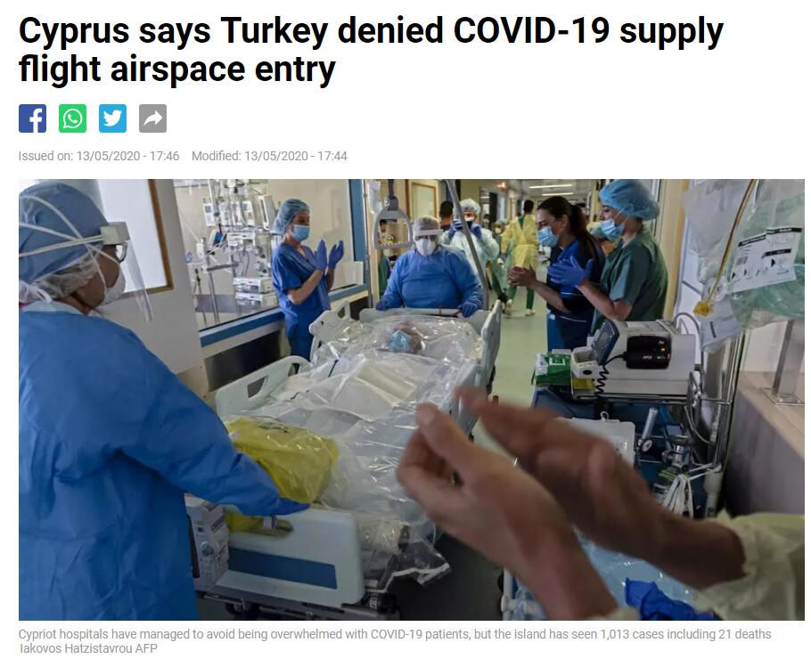
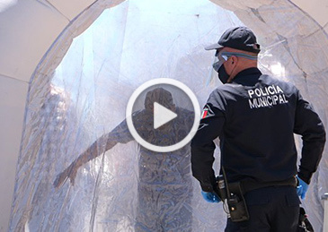

-
宋鲁郑巴黎日记：西方积极要中国查真相，却禁止查自己的线索
最后更新: 2020-05-14 08:36:30【文/观察者网专栏作者 宋鲁郑】
2020年5月13日 星期三 晴
解封第三天。
法国社会正日益恢复正常——请不要误会，这个正常不仅仅是指大家重返工作、正常外出，还指罢工又回来了，游行又回来了，抢劫偷盗也回来了。
在华人社会颇有影响的“华人街”就以“巴黎劫匪复工”为题报道在24小时内，巴黎连发三起劳力士豪华手表劫案，涉案金额约为9.6万欧元。
三起劫案全发生在解封当天：
一是19点25分许——现在是夏时制，晚上9点天都很亮——两名劫匪闯入巴黎十一区一家服装店，抢走受害者佩戴的劳力士手表和手机，二人随后骑摩托车逃离现场。据称被抢的瑞士名表价值1万欧元。
仅仅35分钟之后，巴黎十七区一名男子驾奔驰汽车停在岱纳广场等候朋友。一人靠前搭讪，称想拍摄豪车的照片，伺机从车主的手腕上夺走一块价值7.7万欧元的劳力士手表，转眼跳上计程车逃之夭夭。
这两起是光天化日下抢劫，第三起则发生在夜间：12日凌晨2点55分，一名受害者走在巴黎十六区的维克多·雨果大街（avenue Victor-Hugo），遭遇两名劫匪，其中一人持枪相向，另一人持刀威吓，抢走手机和一块价值9000欧元的劳力士手表。
能戴得起如此豪华手表的自然也是精英人士。治安和病毒一样，一个保护不了百姓的国家，自然连精英也保护不了。当然，也许过几天他们会庆幸幸好被偷了也未可知。
日记明天收官，今天加紧观察解封的法国社会。
上午去超市，果不其然，人不少，而且采购量明显超出正常水平。很可能昨天外出民众的疯狂和肆无忌惮吓坏了还有理智的民众，大家要为第二波疫情存货了。我看了下，洗手液、食用油和调料出现短缺，品种明显不全。
今天法国的重大新闻还是和口罩有关。3月25日，在口罩极其紧缺的情况下，政府竟然发现3.62亿个口罩库存！此前，政府一直声明库存为1.5亿个。4月20日其中的8500万个投入使用，150万被销毁。这种管理水平，很难相信法国是一个发达国家。其中一个很大的原因是人事（换人换党）更换频繁，已无人知道家底。
关于口罩，我一直很奇怪，当政府一再说戴口罩没有用的时候，负有监督作用的媒体干什么去了？怎么都附合政府的谎言呢？不仅如此，还找出国情、文化、传统、体制等一大堆理由来说明不可能让西方民众戴上口罩。显然，欧美疫情这么严重，西方媒体也是负有重要责任的。
直到4月23日德国媒体才改弦易辙，声称“佩戴口罩，人人有责”。更令人拍案惊奇的是，5月4日，中国和西方各自在疫情中的表现已经无可争议地展现在全球时，“德国之声”台长林堡表示，中国如果有新闻自由的话，不但已经找到病毒来源，当初也不会有这么多中国人病亡牺牲。
那么请问，欧美自诩有新闻自由，何以灾情远比中国严重？死亡远超中国？既然新闻自由在欧美不但不起作用，后果更比中国严重，那么西方凭什么逻辑推理出中国如果有新闻自由就如何如何？如果按照西方的逻辑，根据事实，西方原来没有新闻自由，中国才有啊。
今天欧洲还有一件冲突和中国有关：塞浦路斯从中国购买的36吨医疗物资由于土耳其拒绝飞机进入其领空，不得不迫降在俄罗斯。塞土两国积怨颇深，但在疫情面前都放不下，实在令人无法苟同。

报道来源：France 24
当然，有美国这样的榜样在，以及德国、意大利等国在，我们也无法苛责。毕竟在今天的世界里，西方仍然被大家当作标准。土耳其只是不允许其过境，还没有将物资扣下为己所用，相对于这些西方国家，已经不错了。
今天网友还和我分享了一个好消息：我周一在法国药房买的口罩来自湖南一家企业，现在这家企业股票大涨。基于我的观察，欧美持续存在的巨大市场，将令其成为一只长牛股。欧美封城太过松懈，未能取得中国的成效。但同时国家和民众都缺乏承受危机的能力，迫使欧美都不得不提前解封。
4月以来美国失业人数超过2000万，失业率高达14.7%。制造业，除了少数生产防疫产品，大部分处于停工状态；农业，农田无人耕作，母牛产子无人接生；商业，百年以上的大型百货公司如彭尼挺过了1930年代的经济大萧条，挺过了2008年的金融海啸，挺不过新冠病毒的冲击，宣布破产，中小企业倒闭更满目皆是。民生出现艰困局面，由于食品加工厂停产，大型超市已做出限购肉类的规定。民生艰困将激发更大民怨。
特朗普为纾解危机，唯有全国复工。但复工很有可能导致新冠疫情二次大爆发。
五月以来，新冠病毒不仅在底层人群中蔓延，而且向精英阶层逼近，政界领袖、金融大亨、文化名人纷纷感染死亡。美国疾病防控中心（CDC）主任雷德菲尔德 、国家卫生院（NIH）传染病研究中心主任福奇 、食品与药物管理局（FDA）局长哈恩 ，相继宣布自己要在家隔离14天……连特朗普总统、彭斯副总统身边的工作人员，都成为新冠病毒感染者，使得彭斯副总统也不得不自我隔离。
这还是在居家避疫令没有解除时发生的情形，一旦解除，那情形将是什么样？不难想象。专家预测，如果美国解除居家避疫令全面复工，至6月底全国死亡人数将达到35万人。
欧洲国家解封后，共同的特点是新增确诊人数大幅上升。欧洲今天死亡人数突破16万，从15万到16万仅仅用了6天。意大利周一还只有700多，周二就翻倍超过1400。
除非欧美最后接受群体免疫，民众也愿意接受几十万人的死亡代价，否则对医疗物资的需求将是天量。
- 原标题：巴黎日记：西方积极要中国查真相，却禁止查自己的线索 本文仅代表作者个人观点。
- 责任编辑: 李泠
热门评论 9条
我要评论
请自觉遵守互联网相关的政策法规，共同营造“阳光、理性、平和、友善”的跟评互动环境。
全部评论 140条
最热 最早 最新- 现在的悬念是，如果要追查病毒源头，西方其他国家会帮助美国掩盖事实真相，还是向美国要真相？
- chenbin19961996有种当年日本被我国名义GDP赶上，其国民的感觉。
放心，一旦被超越，短期内就会迅速拉大。这不是线性发展的问题。而是技术水平、产品替代、国际影响力等各方面的超越。存在此消彼长的现象。2010超过日本，到今年年底估计会接近日本3倍，不过10年而已 - 军运会上的这些美英法德澳意运动员，中国可以要求调查他们。
- 遇见特朗普这样的美国政客，不是什么偶然、幸运，这是美国社会的必然，也是中国韬光养晦发展自己到一定程度的必然。
- 他们一荣俱荣，一损俱损。这次被一勺烩了。都已经被焖进锅里点火了，还不许这些螃蟹吐几个泡泡？

- “打不过就加入，”我觉得这句话不适用于中美关系。
- 欧美自己国内的已经不是吹哨了是滴滴答答吹喇叭，执政者还不听不听我不听！
- 是的，法国、意大利国防部为什么要求军运会运动员闭嘴，他们在隐瞒什么？据说军运会期间有5名霉国运动员生病，并且被紧急接回霉国——那5人生了什么病？！必须要求WHO到美国核查
- 现在越来越多的爆料，西方的零号病人的时间线不断的向前移，1月，去年12月，甚至去11月就出现了，请问，新闻自由的西方为什么没有比中国更早的及时发现呢？西方的疾控机构为什么没能比中国更早的发现情况并向世界吹哨呢？最后要等到西方媒体口中医疗落后的中国先发现并向世界吹哨你们才知道这个病？到底是谁在隐瞒呢？
- 必须要求霉国开棺验尸2019年的白肺病人和美国流感死者的遗体，追查病毒来源，鉴于霉国流行情况推断，很可能新冠病毒在霉国流行比中国还早，是病毒的起源之地，最大可能就是霉军提取病毒然后泄露了！必须要求WHO到美国核查去年霉国因白肺病和霉国流感死去的人是否有新冠病毒感染 。
- 欧洲的心理优势还会维系很长一段时间
- Round II, Fight!
- 军运会到底隐藏着多少秘密？
- 作者一件事搞错了，就是米国原本还在疫情爆发中，何来二次大爆发？
- "究竟是什么力量可以令法国、意大利两个西方大国的国防部迅速采取封口行动" 既上次特朗普改了发言稿高喊几次“中国病毒”貌似作为苦主的我们也迅速采取了封口行动，绝不提军运会的事情了。
- 火腿小酱"美国人终究是务实的。"
帝国主义者很傲慢。凡是可以不讲理的地方就一定不讲理,要是讲一点理的话,那是被逼得不得已了。资本主义或许喜欢战争，但资本一定不喜欢战争，一旦战争，资本就是数字，所有物资为战争服务，金钱变得毫无意义，那时就是资本的末日 - 全部楼层guan_15740938381641好战必亡 忘战必危 请谨言慎行啧啧，理客中真可怕，你们洋爸爸无理也要闹三分，我们有理还不能说两句狠话？！！
还真是一脉相传的双标啊 - 或者增加保镖从业人员
- 疫情是全人类敌人，但是透过疫情却发现西方欧美如此弱不禁风，禁不住想，还有其它这样的工具么？
- 日记明天就收尾了！不舍得呀！有后续就好了！
-
俄外长：美国隐瞒海外生物实验室内容令人生疑
2020-05-14 08:16 -
研究：白宫使用的检测装置经常错诊
2020-05-14 07:04 新冠肺炎抗疫战 -
福奇警告后，特朗普：不可接受
2020-05-14 06:50 新冠肺炎抗疫战 -
经济持续恶化 千辆巴士聚集美国白宫门前抗议
2020-05-14 06:41 新冠肺炎抗疫战 -
印度最大贫民窟确诊病例破千
2020-05-14 06:27 新冠肺炎抗疫战 -
美国新增确诊破2万 累计近139万
2020-05-14 06:17 新冠肺炎抗疫战 -
王毅在上合组织成员国外长视频会议上发言
2020-05-13 23:28 上合组织 -
澳媒内斗：别以为在对华贸易问题上澳大利亚是无辜的
2020-05-13 23:18 -
圣彼得堡医院火灾后，美停用俄呼吸机
2020-05-13 22:39 新冠肺炎抗疫战 -
新闻联播17个四字词语痛批某些美国政客
2020-05-13 20:39 新冠肺炎抗疫战 -
澳大利亚请求贸易协商，但称不会放弃调查中国
2020-05-13 20:30 观察者头条 -
共和党参议员提议授权白宫制裁中国 中方回应
2020-05-13 19:40 中美关系 -
特朗普攻击“假新闻”又有新招：这主播杀过人
2020-05-13 18:45 特朗普 -
外交部：中加将开展疫苗研发等卫生合作
2020-05-13 18:32 新冠肺炎抗疫战 -
特朗普要联邦退休金撤离A股？外交部：不符合经济规律
2020-05-13 17:59 美国一梦 -
出访以色列，他终于肯戴口罩了
2020-05-13 17:30 新冠肺炎抗疫战 -
拜登团队放风竞选策略：对华要比特朗普更硬
2020-05-13 17:21 美国政治 -
特朗普很慌：我们要小心，绝不能让佩洛西代理总统
2020-05-13 16:49 特朗普 -
美国要求在英美贸易协定中加条款，被指阻碍中英交流
2020-05-13 16:42 不列颠 -

墨西哥边境城镇用“消毒通道”消杀美国访客
2020-05-13 16:37 美国一梦
相关推荐 -
中国驻捷克使馆，干得漂亮 评论 295喀什：密接者已全部隔离，机场恢复运营 评论 85新疆喀什地区报告1例无症状感染者 评论 141全美日增超8万创新高，多州破纪录 评论 531美军侦察机飞越台湾岛上空？美军先承认后否认 评论 2461猛！在上甘岭，他一人歼敌283人……评论 410 赞 03女子推同伴下水后双双溺亡，警方：推人者曾服用过抑郁症药物评论 256 赞 04【《金刚川》审片】论管虎的合理使用：《八佰》和《金刚川》到底区别在哪？评论 197 赞 05为治白发狂吃何首乌20天，小伙全身蜡黄肝受损评论 192 赞 06专家建议从放开三孩开始逐步推进放开生育评论 165 赞 07小学学习不重要这话特别坑人！我孩子今年升的初中名校，7科4满分在他们班屁都不是评论 156 赞 08求助帖，孩子小学一年级，我发现我患上焦虑症了。评论 149 赞 09战争片《长津湖》开机，吴京、易烊千玺演兄弟评论 140 赞 010金刚川审片——管虎没有诺兰的水平，却想拍《敦刻尔克》评论 127 赞 0最新闻 Hot
-
新疆喀什地区报告1例无症状感染者
-
涉15亿英镑！汇丰擅自冻结190万“不活跃”账户
-
美国运动员要求奥运会允许抗议示威，奥委会主席明确反对
-
巴西卫监局批准进口600万剂中国新冠疫苗
-
美高官声称海岸警卫队正部署舰艇，矛头直指中国
-
港媒批：一些香港人对深圳崛起的反应类似美国人
-
福奇：是时候推行全美口罩强制令了
-

意大利也对华为下手了
-
为拜登“丑闻”限流，他俩惹来一身“腥”
-
全美日增超8万创新高，多州破纪录
-
纽约州长出新书《美国危机》，赵立坚点赞
-
美这州自曝疫情数据被“低估”：联邦系统有缺陷
-
美军侦察机飞越台湾岛上空？美军先承认后否认
-
FDA前局长：美国死亡病例数可能会“令人震惊”
-
美司法部不依不饶，法官又拒了
-
赵立坚：普京总统的表态说得太好了！
-
Copyright © 2019 观察者 All rights reserved。
沪ICP备10213822号 互联网新闻信息服务许可证：31220170001
违法及不良信息举报电话：021-62376571
 沪公网安备 31010502000027号
中国互联网举报中心
上海市互联网违法与不良信息举报中心
沪公网安备 31010502000027号
中国互联网举报中心
上海市互联网违法与不良信息举报中心
当然，西方查的目的是向中国甩锅来推卸自身防疫不力的责任，自查岂不是本末倒置？
真查出来问题根源出在他们自己家，那不是跟自己过不去吗？
问题是，赵立坚已经揭锅了，怎么继续，一定在底下拳打脚踢，真正的博弈是我们看不到的。
西方的套路一直是：先树一个靶子，然后死命打击，然后跟你就这个靶子讨价还价.......你被牵着鼻子走，忙于拼命挣脱，就顾不上他的软肋了。
还是太祖英明：你打你的我打我的，你想牵制我的鼻子，我一脚直踹你的命根子，就算我鼻子破了，也打你一个断子绝孙。
放心，一旦被超越，短期内就会迅速拉大。这不是线性发展的问题。而是技术水平、产品替代、国际影响力等各方面的超越。存在此消彼长的现象。
帝国主义者很傲慢。凡是可以不讲理的地方就一定不讲理,要是讲一点理的话,那是被逼得不得已了。
当然，西方查的目的是向中国甩锅来推卸自身防疫不力的责任，自查岂不是本末倒置？
真查出来问题根源出在他们自己家，那不是跟自己过不去吗？
打得一拳开，免得百拳来，毛爷爷的话从来都是大白话，却越嚼越有味道。
台湾香港不要跳，跳得越高，越招祸！
放心，一旦被超越，短期内就会迅速拉大。这不是线性发展的问题。而是技术水平、产品替代、国际影响力等各方面的超越。存在此消彼长的现象。